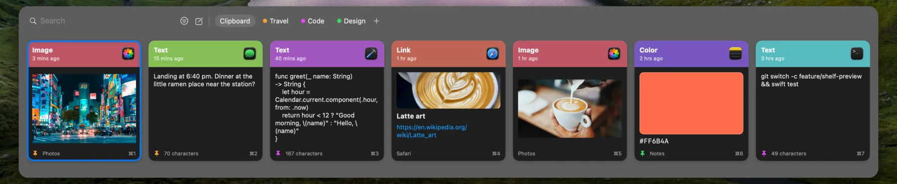

ClipShelf
A clipboard manager for iPhone, iPad and Mac. Everything you copy, kept on a shelf you can search.
Get it on the App Store
One shortcut on your Mac
Press Shift-Command-V in any app, and your clipboard history opens at the bottom of the screen. Type to search, then copy what you need. Coming to the Mac App Store.
More about ClipShelf for Mac
In your pocket on iPhone
Save text, links and images, pin what matters, and type any item from the ClipShelf keyboard in any app. On iPad and iPhone Duo, the list and the item sit side by side. Free on the App Store.
More about ClipShelf for iPhone
Simple on purpose
Pinboards
Keep items on named, colored boards. Pinned items never expire.
iCloud sync
Off until you turn it on, and it only uses your own private iCloud.
Private
No account, no ads and no tracking. Your history stays yours.
Common questions
What is ClipShelf?
ClipShelf is a clipboard manager for Mac, iPhone and iPad. It keeps the text, links and images you copy in a history you can search, so you can use them again. You can keep important items on named, colored pinboards, where they never expire.
Does iPhone have a clipboard history?
No. iOS remembers only the last thing you copied. ClipShelf adds a history, but iOS lets apps read the clipboard only while they are open. So ClipShelf saves what you copied when you open the app or its keyboard, when you tap its paste button, or when you share something to it.
How do I see my clipboard history on a Mac?
macOS also holds only one copied item. With ClipShelf on your Mac, press Shift-Command-V in any app to open your history at the bottom of the screen. Type to search, press Return to copy an item, then press Command-V to paste it.
Is ClipShelf free?
ClipShelf for iPhone and iPad is free on the App Store, with no in-app purchases and no ads. ClipShelf for Mac is a separate paid app with a one-time price and no subscription. It is in App Review now.
Is it safe to keep my clipboard in an app?
ClipShelf has no accounts and no servers of its own, and it does not use analytics or advertising. Your history stays on your devices. On Mac it skips content that apps mark as confidential, such as passwords from password managers, and content from apps you choose to ignore.
How does sync between Mac and iPhone work?
Sync is off until you turn it on. When it is on, ClipShelf uses the private database of your own iCloud account, so the developer cannot read it. Turn on sync on each device and sign in to the same iCloud account. You can sync everything or only your pinboards.
Stop copying things twice
ClipShelf is free on iPhone and iPad, and works with ClipShelf for Mac through your own iCloud.
Get it on the App Store